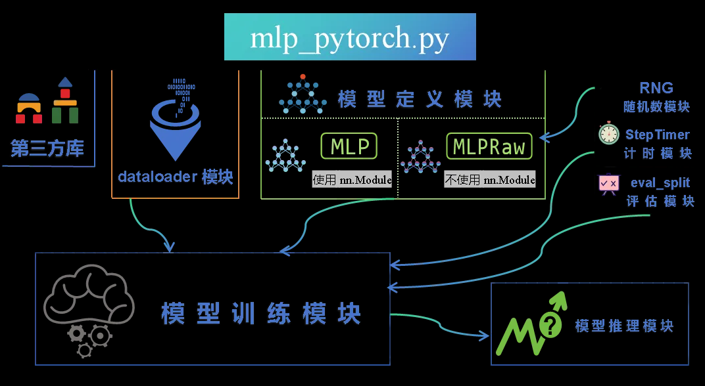

Input Projector[11] Connector[10] #
| Input Projector输入投影器 | |
|---|---|
| Cross-attention | Flamingo, Owl, Qwen-VL |
| Q-Former | BLIP2, InstructBLIP, MiniGPT-4, MiniGPT-5 |
| MLP[10] | CogVLM , LLaVa1.5 |
| Linear Project | LLaVa, PaLI-x, MiniGPT-v2 |
| Perceiver resampler[10] | Flamingo |
| CNN [10] | DocOwl 1.5[H-Reducer?] |
MLP[1] #
定义 #
多层感知机（MLP，Multi-Layer Perceptron）属于前馈神经网络（Feedforward Neural Network）的一种。在模型 训练过程中，需要通过反向传播算法计算梯度，将误差从输出层反向传播回输入层，用于更新网络参数。它包含至少三层节点：一个输入层，一个或多个隐藏层，以及一个输出层。每一层的节点都全连接到下一层的每个节点。MLP 模型通常用于解决分类和回归问题。
PyTorch代码 [2] #

class MLP(nn.Module): # 继承自 nn.Module，这是所有 PyTorch 模型的基类。
def __init__(self, vocab_size, context_length, embedding_size, hidden_size, rng):
# 接受五个参数：vocab_size（词汇表大小）、context_length（上下文长度）、
## embedding_size（嵌入层大小）、hidden_size（隐藏层大小）和 rng（随机数生成器）。
# 调用 super().__init__() 初始化父类 nn.Module。
super().__init__()
# 定义一个嵌入层 self.wte，使用 nn.Embedding 将输入的 token 索引转换为嵌入向量。
## vocab_size 是词汇表的大小，embedding_size 是嵌入向量的维度。
self.wte = nn.Embedding(vocab_size, embedding_size)
# 使用 nn.Sequential 定义一个多层感知机（MLP）：
#
self.mlp = nn.Sequential(
nn.Linear(context_length * embedding_size, hidden_size), # 第一层全连接层，将输入的上下文嵌入向量映射到隐藏层。
nn.Tanh(), # # Tanh 激活函数。
nn.Linear(hidden_size, vocab_size) # 第二层线性层，将隐藏层的输出映射到词汇表大小的输出。
)
self.reinit(rng) # 调用 reinit 函数，使用自定义的随机数生成器 rng 初始化权重。
@torch.no_grad()
def reinit(self, rng):
# 定义 reinit 函数，并使用 @torch.no_grad() 装饰器，表示在这个函数中不需要计算梯度。
def reinit_tensor_randn(w, mu, sigma):
# 以正态分布 N(mu, sigma) 初始化张量 w 的权重。
winit = torch.tensor(rng.randn(w.numel(), mu=mu, sigma=sigma))
w.copy_(winit.view_as(w))
def reinit_tensor_rand(w, a, b):
# 以均匀分布 U(a, b) 初始化张量 w 的权重。
winit = torch.tensor(rng.rand(w.numel(), a=a, b=b))
w.copy_(winit.view_as(w))
# Let's match the PyTorch default initialization:
# 以均值为0、标准差为1的正态分布初始化嵌入层 self.wte 的权重。
reinit_tensor_randn(self.wte.weight, mu=0, sigma=1.0)
scale = (self.mlp[0].in_features)**-0.5 # 算第一层全连接层的缩放系数 scale，其值为输入特征数量的负平方根。
# 以均匀分布 U(-scale, scale) 初始化第一层全连接的权重和偏置。
reinit_tensor_rand(self.mlp[0].weight, -scale, scale)
reinit_tensor_rand(self.mlp[0].bias, -scale, scale)
# 对于第二层全连接层的处理同上
scale = (self.mlp[2].in_features)**-0.5
reinit_tensor_rand(self.mlp[2].weight, -scale, scale)
reinit_tensor_rand(self.mlp[2].bias, -scale, scale)
def forward(self, idx, targets=None):
# 与 MLPRaw 类的 forward 函数基本相同，但更简洁。
B, T = idx.size()
emb = self.wte(idx) # (B, T, embedding_size)
emb = emb.view(B, -1) # (B, T * embedding_size)
logits = self.mlp(emb)
loss = None
if targets is not None:
loss = F.cross_entropy(logits, targets)
return logits, loss
参考 #
Self
+ MM-LLMs: Recent Advances in MultiModal Large Language Models